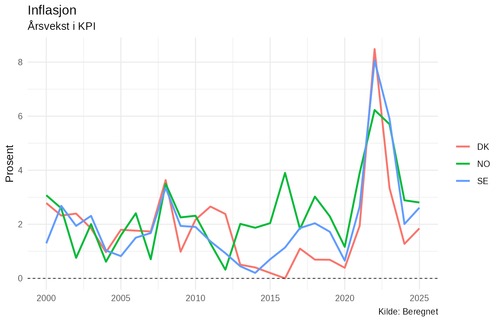
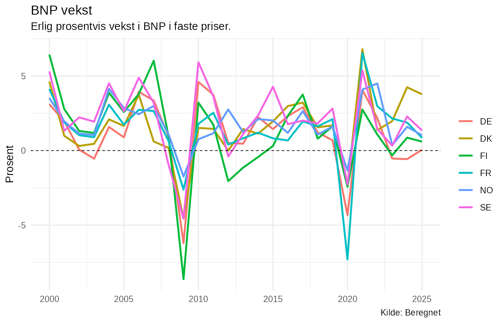
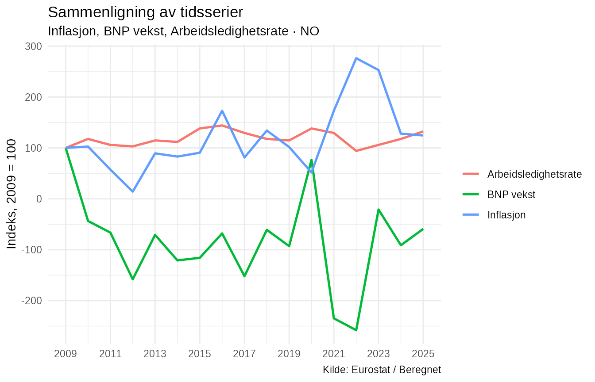

Internasjonale data i NorMacro
NorMacro inneholder standardiserte makroøkonomiske data som kan brukes til å sammenligne Norge med andre europeiske land.
De internasjonale dataene følger samme grunnprinsipp som de norske
dataene, men inneholder i tillegg kolonnen Land. Hver rad
representerer derfor en kombinasjon av land og år.
Denne vignetten bruker et statisk eksempeldatasett som følger med pakken. Det gjør eksemplene reproducerbare og uavhengige av eksterne API-er.
Eksempeldatasettet
data(normacro_international_example)
data(normacro_international_example_metadata)
dim(normacro_international_example)
#> [1] 156 14Eksempeldatasettet inneholder årlige observasjoner for perioden 2000–2025 for Norge, Sverige, Danmark, Finland, Tyskland og Frankrike.
De økonomiske variablene omfatter blant annet priser, arbeidsmarked, nasjonalregnskap, boligmarked og utenriksøkonomi.
names(normacro_international_example)
#> [1] "Aar" "Land" "HICP"
#> [4] "Inflasjon" "Befolkning" "Arbeidsledighetsrate"
#> [7] "BNP_faste_priser" "BNP_vekst" "Sysselsatte"
#> [10] "Arbeidsstyrke" "Boligprisindeks" "Boligprisvekst"
#> [13] "Eksport" "Import"Metadataene beskriver variablene og deres enheter:
normacro_international_example_metadata[
c(
"Variabel",
"Display_navn",
"Kategori",
"Enhet",
"Analyse_type"
)
]
#> # A tibble: 12 × 5
#> Variabel Display_navn Kategori Enhet Analyse_type
#> <chr> <chr> <chr> <chr> <chr>
#> 1 HICP Harmonisert konsumprisindeks Priser … Inde… indeks
#> 2 Inflasjon Inflasjon Priser … Pros… rate
#> 3 Befolkning Befolkning Demogra… Pers… nivå
#> 4 Arbeidsledighetsrate Arbeidsledighetsrate Arbeids… Pros… rate
#> 5 BNP_faste_priser BNP faste priser Nasjona… Mill… nivå
#> 6 BNP_vekst BNP vekst Nasjona… Pros… rate
#> 7 Sysselsatte Sysselsatte Arbeids… Pers… nivå
#> 8 Arbeidsstyrke Arbeidsstyrke Arbeids… Pers… nivå
#> 9 Boligprisindeks Boligprisindeks Boligma… Inde… indeks
#> 10 Boligprisvekst Boligprisvekst Boligma… Pros… rate
#> 11 Eksport Eksport Utenrik… Mill… nivå
#> 12 Import Import Utenrik… Mill… nivåSammenlign én variabel mellom land
plot_series() kan brukes til å plotte samme variabel for
flere land.
Her sammenlignes inflasjonen i Norge, Sverige og Danmark:
plot_series(
"Inflasjon",
data = normacro_international_example,
metadata = normacro_international_example_metadata,
countries = c("NO", "SE", "DK")
)
Når data inneholder kolonnen Land, tegnes
én tidsserie per land.
Det gjør det mulig å se både felles økonomiske bevegelser og perioder der utviklingen skiller seg mellom landene.
Sammenlign alle eksempel-landene
Det samme kan gjøres for alle landene i datasettet.
plot_series(
"BNP_vekst",
data = normacro_international_example,
metadata = normacro_international_example_metadata
)
Her viser figuren årlig vekst i BNP i faste priser.
Makroøkonomiske sjokk kan påvirke flere land samtidig, men både størrelse og tidsforløp kan variere mellom økonomiene.
Sammenlign flere variabler innen ett land
Internasjonale data kan også brukes til å studere samspillet mellom flere økonomiske størrelser innen ett bestemt land.
compare_series() har argumentet country,
som velger landet som skal analyseres.
compare_series(
c(
"Inflasjon",
"BNP_vekst",
"Arbeidsledighetsrate"
),
data = normacro_international_example,
country = "NO"
)
Som standard normaliseres seriene. Det gjør det lettere å sammenligne utviklingen når variablene har forskjellige måleenheter og nivåer.
Korrelasjoner innen ett land
correlate_series() kan brukes etter at datasettet er
filtrert til ett land.
norway <- normacro_international_example[
normacro_international_example$Land == "NO",
]
correlate_series(
c(
"Inflasjon",
"BNP_vekst",
"Arbeidsledighetsrate",
"Boligprisvekst"
),
data = norway
)
#> # A tibble: 6 × 11
#> Variabel_x Display_x Variabel_y Display_y Korrelasjon P_verdi
#> <chr> <chr> <chr> <chr> <chr> <chr>
#> 1 BNP_vekst BNP vekst Boligpris… Boligpri… 0,450 0,047
#> 2 Arbeidsledighetsrate Arbeidsledighet… Boligpris… Boligpri… 0,356 0,161
#> 3 Inflasjon Inflasjon Boligpris… Boligpri… -0,284 0,225
#> 4 Inflasjon Inflasjon Arbeidsle… Arbeidsl… -0,164 0,530
#> 5 BNP_vekst BNP vekst Arbeidsle… Arbeidsl… -0,097 0,711
#> 6 Inflasjon Inflasjon BNP_vekst BNP vekst 0,089 0,665
#> # ℹ 5 more variables: Antall_observasjoner <int>, Metode <chr>, Startaar <int>,
#> # Sluttaar <int>, Signifikant <chr>NorMacro bruker tilgjengelige felles observasjoner for hvert variabelpar. Analyseperioden kan derfor variere mellom korrelasjonene når tidsseriene har forskjellig datadekning.
Korrelasjoner beskriver statistisk samvariasjon og innebærer ikke i seg selv en kausal sammenheng.
Siste observasjoner på tvers av land
latest_observations() gjenkjenner den internasjonale
datastrukturen og finner siste tilgjengelige observasjon for hver
kombinasjon av land og variabel.
latest_observations(
data = normacro_international_example
)
#> # A tibble: 72 × 11
#> Siste_aar Land Variabel Siste_verdi Display_navn Kategori Type Beskrivelse
#> <int> <chr> <chr> <dbl> <chr> <chr> <chr> <chr>
#> 1 2025 DE Arbeidsl… 3.8 e+0 Arbeidsledi… Arbeids… Orig… Arbeidsled…
#> 2 2025 DE Arbeidss… 4.23e+7 Arbeidsstyr… Arbeids… Orig… Personer i…
#> 3 2025 DE Sysselsa… 4.60e+7 Sysselsatte Arbeids… Orig… Sysselsatt…
#> 4 2025 DE Boligpri… 1.53e+2 Boligprisin… Boligma… Orig… Prisindeks…
#> 5 2025 DE Boligpri… 3.18e+0 Boligprisve… Boligma… Bere… Årlig pros…
#> 6 2025 DE Befolkni… 8.36e+7 Befolkning Demogra… Orig… Befolkning…
#> 7 2025 DE BNP_fast… 3.26e+6 BNP faste p… Nasjona… Orig… Bruttonasj…
#> 8 2025 DE BNP_vekst 5.71e-2 BNP vekst Nasjona… Bere… Erlig pros…
#> 9 2025 DE HICP 1.32e+2 Harmonisert… Priser … Orig… Harmoniser…
#> 10 2025 DE Inflasjon 2.25e+0 Inflasjon Priser … Bere… Årsvekst i…
#> # ℹ 62 more rows
#> # ℹ 3 more variables: Enhet <chr>, Kilde <chr>, Analyse_type <chr>Resultatet inkluderer både land, verdi og sentrale metadata.
Det kan for eksempel filtreres videre med vanlige R-verktøy dersom bare enkelte land eller kategorier er interessante.
Hent det fullstendige internasjonale datasettet
Det statiske eksempeldatasettet brukes i denne vignetten for å gjøre dokumentasjonen reproducerbar.
Ved vanlig bruk hentes det fullstendige internasjonale datasettet med:
international <- get_international_macro()De samme analysefunksjonene kan deretter brukes på det fullstendige datasettet.
plot_series(
"Inflasjon",
data = international,
countries = c("NO", "SE", "DK", "DE")
)
compare_series(
c(
"Inflasjon",
"BNP_vekst",
"Arbeidsledighetsrate"
),
data = international,
country = "NO"
)get_international_macro() kan hente eller bygge data fra
NorMacros internasjonale datakilder. Derfor kjøres ikke denne
datainnhentingen som en del av selve vignettbyggingen.
Videre analyse
Internasjonale data gjør det mulig å bruke NorMacro både til å analysere utviklingen i ett land og til å sette norsk økonomi inn i en bredere europeisk sammenheng.
Mer avanserte analyser kan bygge videre på de samme standardiserte variablene, blant annet gjennom normalisering, korrelasjonsanalyse, regresjon og konjunkturanalyse.